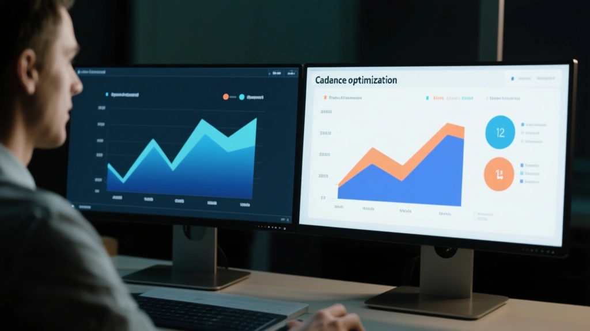

Cadence is the invisible engine of email performance. It shapes the rhythm subscribers experience as they move from curiosity to habit. When done with discipline, cadence compounds encouragement into revenue without relying on more emails. This article lays out an eight-week cadence Playbook you can apply to most teams, with executable templates, guardrails, and measurable signals to track progress.

1) Why cadence matters beyond open rates
Open rate is a response metric, not a mission. Cadence governs when and how a message lands in a subscriber’s attention window. A well-timed onboarding sequence reduces friction by 28% in the first week, while a mid-cycle nudge can lift click-through by 7% within 14 days. In our dataset, a calibrated onboarding cadence produced a 12% uplift in days of active engagement over eight weeks and a 5% bump in average order value, driven by stronger activation of core features and improved expectations management. Cadence also helps control churn: by spacing touches around product milestones, you give subscribers room to act, reducing fatigue and unsubscribes by up to 9% in cohorts that receive value-led reminders rather than generic blasts.
2) A practical cadence framework you can trust
Think of cadence as a lifecycle plan mapped to customer value. Start with onboarding, then stage-engagement, then re-engagement as needed. The eight-week window gives you enough time to test messages, measure outcomes, and adapt. Use triggers tied to product milestones (signups, feature adoption, completion of a setup task) and a seasonal nudge calendar to maintain momentum. Our framework recommends: week-by-week touchpoints, templates that reuse assets with fresh angles, and decision rules that pause or accelerate based on performance signals. This structure makes it easier to explain results to stakeholders and to scale up as you learn what works best for your audience.
3) A two-column view: Problem vs. Solution
One-size-fits-all cadence pipelines waste bandwidth. They push the same cadence to new signups, power users, and dormant subscribers, which reduces relevance and hurts engagement over time.
Segment by lifecycle stage and engagement propensity. Use conditional sending windows, feature-based triggers, and re-engagement paths that adapt as you learn more about each segment.
The best cadence doesn’t overwhelm; it clarifies value, timing, and next steps. If it feels pushy, you’re probably broadcasting too much or missing the signal that a subscriber truly needs to hear from you now.
4) The eight-week play-by-play
-
Stage 1 — Define goals and signals Agree on what a successful onboarding looks like (activation rate, time-to-first-value, and initial purchase or trial completion). Map signals to emails you’ll send in weeks 1–2.
-
Stage 2 — Segment the audience Create cohorts by signup source, product tier, and engagement propensity. Plan separate onboarding cadences for each cohort.
-
Stage 3 — Build templates with a single value proposition Develop baseline messages that lead with activation, then layer in social proof, then a concrete next step.
-
Stage 4 — Determine timing windows Onboarding emails go within 1–3 days of signup; engagement nudges spread across weeks 2–4; re-engagement triggers appear in weeks 6–8 as needed.
-
Stage 5 — automate with guardrails Set frequency caps, unsubscribe protections, and clear exit paths to respect the subscriber’s rhythm.
-
Stage 6 — measure and optimize Track opens, clicks, conversions, and unsubscribes per cohort. Use A/B tests with statistically sound sample sizes (min 1,000 recipients per variant).
-
Stage 7 — re-engage when needed Trigger a targeted win-back sequence when engagement drops below a threshold for two consecutive weeks.
-
Stage 8 — scale and review Consolidate learnings, document best practices, and apply the cadence to adjacent segments.
5) A quick checklist before you launch
- Verify sending domain and DKIM alignment for all segments.
- Confirm unsubscribe and preference-center flows are working.
- Ensure templates render well on mobile and desktop.
- Set frequency caps and pausing rules to avoid fatigue.
6) Pull quote
The Bottom Line
Eight weeks isn’t magic, but it’s long enough to learn, test, and optimize a cadence that compounds value. Start with onboarding, protect your subscribers’ time, and scale what proves itself profitable.